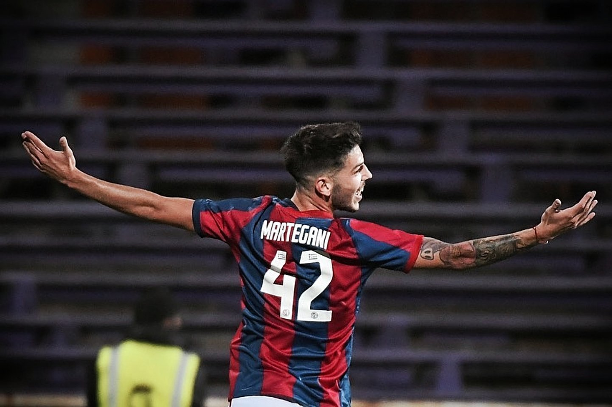

Noticias Destacadas
Martegani y su posible salida
Agustin Martegani es, sin duda, unos de los juveniles con mas futuro prometedor. Lo cierto es que Ruben Dario Insua no lo tuvo en cuenta el ultimo semestre y su futuro en San Lorenzo de cara al 2023 parece estar en otro club. Racing, Newells y Argentinos hicieron ofertas por el juvenil de 22 años. La academia oferto U$S400.000 dolares por el prestamos con opcion de U$S2.000.000 por el 80% del pase a futuro. El equipo conducido por Gabriel Milito oferto $30.000.000 por un prestamo (U$S150.000 aproximadamente), con una opcion de compra similar al equipo de Fernando Gago. En cuanto a Newells, ofrecio $40.000.000 con opcion de compra identica a los dos conjuntos mencionados anteriormente.
Con la camiseta de San Lorenzo jugo un total de 41 partidos desde su debut el 22 de mayo de 2019 ante Estudiantes de San Luis por copa argentina. En lo que va de su carrera anoto 4 goles. La ultima vez que entro fue ante Velez, encuentro en el que jugo 27 minutos. Luego de eso, no sumo en ninguno de los tres partidos claves (Gimnasia de La Plata, Sarmiento de junin y Aldosivi) que decantaron con la clasificacion de San Lorenzo a la Copa Sudamericana.